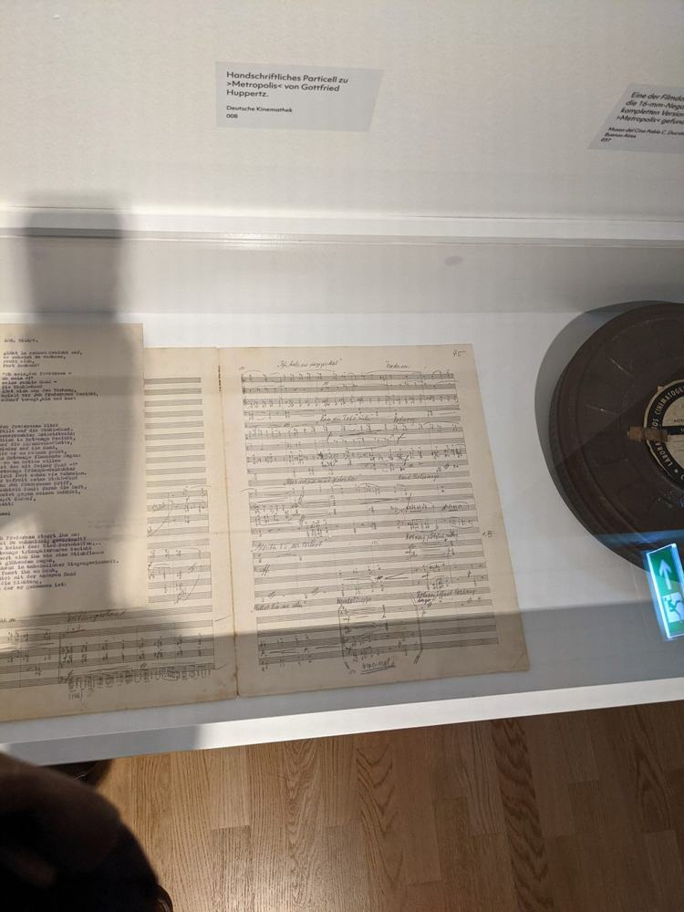
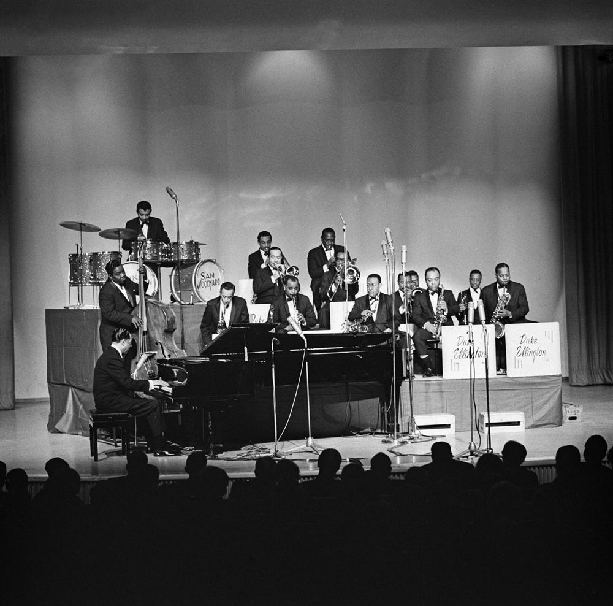

故事
有一首爵士曲，是作曲家躺在病床上寫的。他是 Billy Strayhorn，和 Duke Ellington 合作了將近三十年。1967 年，他因為食道癌住進醫院。
他在病床上寫了一首曲子，叫 Blood Count，意思是血球計數。他把譜送去給樂團，這是他最後的作品之一。同年五月，他過世，只有五十一歲。

Ellington 很快帶著樂團進錄音室，錄了一整張他的曲子。專輯名字叫 And His Mother Called Him Bill。Blood Count 由薩克斯風手 Johnny Hodges 吹主旋律。下次聽 Blood Count，想想病床上寫譜的那雙手。
故事後面
Billy Strayhorn 和 Duke Ellington 合作將近三十年。一九六七年他因食道癌住院，在病床上寫了 Blood Count。
同年五月他過世，年僅五十一歲。Ellington 很快錄了一整張他的曲子，叫 And His Mother Called Him Bill。
Blood Count 由 Johnny Hodges 吹主旋律，被認為是爵士史上最動人的告別之一。

這樣聽
聽中音薩克斯風怎麼一句一句、慢慢地吹完。
逐句英文
One jazz piece was written by a composer lying in a hospital bed.
He was Billy Strayhorn, Duke Ellington's partner for nearly thirty years.
In 1967 he was in hospital with esophageal cancer.
From his bed he wrote a piece called Blood Count.
He sent the score to the band; it was among his last works.
He died that May, at just fifty-one.
Ellington soon took the band into the studio to record an album of his music.
The album was called And His Mother Called Him Bill.
Johnny Hodges played the melody of Blood Count on alto sax.
Next time you hear Blood Count, think of the hands writing in that hospital bed.
查證筆記與出處
Gemini 稿「旋律充滿面對死亡的恐懼」是詮釋，已刪。和 EP53 是同一位人物，前後呼應。
https://en.wikipedia.org/wiki/Billy_Strayhorn
https://en.wikipedia.org/wiki/...And_His_Mother_Called_Him_Bill
一分鐘影片版在 Instagram @jazz101tw。